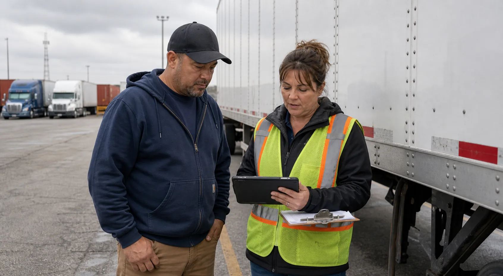

driver readiness and current event status across active records
Safety in the operating flow
Move safety evidence closer to the moment it matters.
Connect inspections, photos, route risk, incident evidence, and post-trip review to the load and the people responsible.
Named readiness stateEvidence tied to the recordClear owner and next action
credential hold that blocks assignment until the safety lead clears it
no current cargo claim reserve on the selected release records
Safety tied to the trip
Before, during, and after the trip, safety records stay connected to operations.
BOF works alongside the fleet's existing safety process and can organize information from driver files, dispatch notes, ELD-style records, camera-event review, and trip documents where the fleet provides that material. Safety signals support driver readiness, dispatch release, claims evidence, settlement review, and business-office accountability without claiming BOF guarantees compliance or prevents incidents.
Pre-Trip Documents
Driver qualification, credential status, equipment notes, cargo plan, BOL requirements, and required proof are checked before dispatch relies on the record.
Connect driversPre-Trip Photos
Truck, trailer, cargo condition, seal, tire, light, coupling, and visible damage photos can support review of whether the trip should release.
Open proof workflowDuring Trip
In-route watch items, safety events, exception notes, cargo condition, and proof needs stay attached to the active operating record.
Connect dispatchAfter Trip
POD, photos, incident notes, claim evidence, and closeout records support settlement and billing review.
Connect settlementsCargo Securement
Securement proof, seal checks, photos, and exception notes can be organized as part of the trip evidence packet.
Open proof workflowSafety Event Workflow
Events are useful when the owner, evidence, operational consequence, and next action are visible.
Open operating recordCompliance Records
Policies, procedures, acknowledgements, and review records become part of internal accountability.
Open policiesSafety review scope
Safety review is stronger when trip evidence, route risk, and incident follow-up stay connected.
BOF can help standardize workflows around safety review without claiming a built integration with Samsara, Motive, Lytx, Geotab, or any other vendor. The fleet supplies the relevant records; BOF organizes the review path, owner, status, and operational consequence.
Driver Safety Review
Credential status, coaching notes, acknowledgements, event history, and assignment impact can support review of whether a driver should move, watch, or hold.
Driver gateHOS / ELD Review Concepts
BOF can organize information from HOS or ELD-style reports provided by the fleet, then show available-hours risk, timing concerns, and who must review.
Review conceptRoute Risk / Weather / Traffic
Route restriction, weather exception, traffic delay, parking risk, and appointment timing notes stay visible before dispatch releases the load.
Route watchCamera Events / Incident Review
Camera-event notes, incident descriptions, witness details, photos, and owner follow-up can support review of what happened and what comes next.
Incident reviewClaims Evidence
Seal photos, cargo condition, dock photos, POD, incident notes, and communication records can be grouped for claims evidence review.
Evidence packetPost-Trip Review
After delivery, BOF can connect POD, photos, driver notes, safety events, claim flags, and settlement holds so closeout is reviewable.
CloseoutSample safety evidence panels
Safety review becomes more useful when every panel shows evidence, owner, and operating consequence.
These illustrative demo panels show how BOF can help standardize workflows around pre-trip, in-route, and post-trip review. They use Samsara-style, Motive-style, Lytx-style, and Geotab-style concepts only as operational categories, not as claims of built integrations or live data pulls.
Pre-Trip Proof Panel
Sample readiness card for documents and photos gathered before dispatch releases the lane.
- Evidence
- Pre-trip documents, truck/trailer photos, cargo securement, seal photo requirement
- Owner
- Dispatcher confirms packet; safety lead reviews exceptions
- Consequence
- Ready when driver, equipment, cargo, and load packet evidence align
In-Route Review Panel
Illustrative panel for HOS/ELD-style, camera-event, traffic, weather, and route-risk review supplied by the fleet.
- Evidence
- Available-hours note, route restriction, traffic/weather exception, camera-event note
- Owner
- Safety or operations reviewer names the next action
- Consequence
- Watch until route risk or event review is resolved
Claims Evidence Handoff
Example proof packet for post-trip safety, incident response, and claims support.
- Evidence
- POD, dock photo, empty cargo photo, seal check, incident note, communication log
- Owner
- Claims, safety, packet owner, or fleet-designated reviewer
- Consequence
- Hold if claim evidence is incomplete before settlement release
Driver safety queue
Safety work is useful when it names the driver, blocker, owner, and dispatch consequence.
BOF keeps safety from becoming a separate checklist. Every item explains whether it blocks dispatch, holds settlement, needs coaching, or simply remains part of the audit trail.
| Driver | Safety signal | Dispatch impact | Settlement impact | Evidence | Action |
|---|---|---|---|---|---|
| M. Alvarez | Current | No safety blocker | No pay hold | Medical card reviewed | Confirm BOL gate |
| J. Carter | Watch | Planned, pending packet review | Wait for BOL proof | BOL image review | Complete document check |
| T. Brooks | Credential hold | Do not assign | Hold until safety clears | Medical card update missing | Safety lead review |
Safety Hold Evidence · BOF-1931
DriverT. Brooks · DRV-3301
Hold reasonMedical card update missing
LaneSt. Louis, MO to Nashville, TN
Dispatch resultDo not assign until credential record clears
Settlement resultPay remains held until safety clears
Next ownerSafety lead
Why dispatch waits
The safety record names the missing credential and prevents the load from being treated like a normal assignment with a generic red label.
Open hold planWhy finance waits
The settlement hold uses the same evidence trail, so pay release and dispatch readiness are not argued from different records.
Open settlementsCredential hold
Owner: Safety lead · Driver: T. Brooks
Updated medical card must be attached and reviewed before BOF-1931 leaves hold status.
Document watch item
Owner: Dispatcher · Driver: J. Carter
Safety does not block the driver, but the packet still needs a readable BOL image before release.
Clear driver file
Owner: Operations · Driver: M. Alvarez
CDL, MVR, DQF, and medical status support the assignment once document review clears.
Safety records in the office
Safety review should be visible enough for dispatch, ownership, and finance to trust.
Credential dates, coaching notes, packet proof, and review outcomes stay connected to the operational decision instead of living in separate folders.

Safety meeting record review
Driver coaching and corrective actions remain attached to the next operating decision.

Compliance board
Credential expirations and review dates become visible before they block dispatch.
Driver file audit
DQF status, medical card, and safety acknowledgements are organized around readiness.